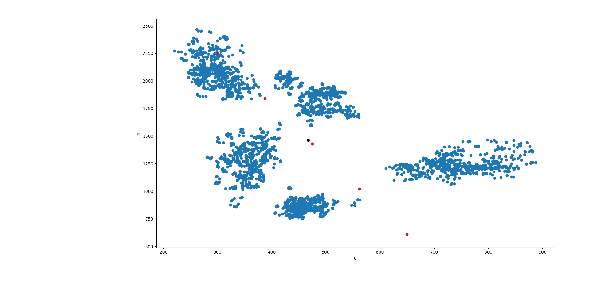
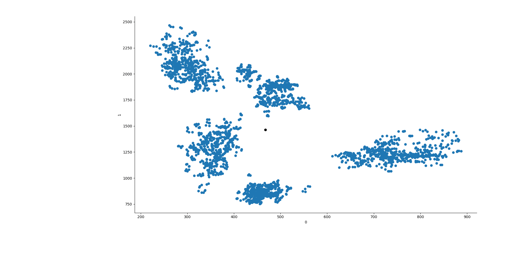

Unsupervised Vowels
The difference between supervised and unsupervised learning is that the first requires human help to learn to categorize data, while the latter does not need anything more than the data itself to learn and propose its own classification groups. In the future A.I. will conquer the world with supercyborgs, at least that's what I got from tabloids, so it would be better for these cyborg to learn how to distinguish between a u and a i, otherwise there might be the chance that instead of "fire!" they will understand "fare!" or, even worse, "fr!". This digression was just to explain that we will talk about vowel classification with unsupervised clustering using k-means.
Vowels, formants and other legendary frequencies
In this blog we have already talked about formants, how to normalize them and how to extract them with PRAAT.
Briefly, we will use the F1 and F2 frequencies to categorize vowels from this dataset of Japanese speakers. The dataset includes F3 and F4 frequencies and bandwidths, but we will only use the first two variables from the dataset.
K-Means
Wikipedia gives a nice explanation of K-Means. Shortly: N centroids are randomly, or manually, put, where N = the number of groups you want to obtain. In this case, for example, I want to obtain 5 groups from the data (group all the data so to give me 5 vowels).
First of all, we calculate the euclidean distance between each centroid previously placed and the observed data. Based on the distances we then partition our data in N groups (5 in our case). The new updated centroid of each cluster so created will be used as starting point, just like before, and the distances will be calculated again.
We will reach a point, eventually, where the centroids are positioned where they will not move anymore, and so the learning will finish, although the results may not be accurate.
It is important to notice, that hardly this clustering method gives results close to real data.
Implementazione in Python
We will need the following packages
import matplotlib.pyplot as plt import pandas as pd import numpy as np import seaborn as sns from sklearn.cluster import KMeans from sklearn.cluster import AgglomerativeClustering
Pandas will be used to manipulate the data.
We will import K-Means but also the AgglomerativeClustering, just to have a comparison point.
You can avoid importing seaborn and matplotlib, but you lose much of the fun in doing so.
Then, we take the data from the Japanese National Institute of Information and Communications Technology.
This dataset contains values for the "F1", "F2", "F3" and "F4" formants. We will only need the first two values, which are the most used in first exploratory analysis of a language's vowel system.
link = "http://www2.nict.go.jp/bit/people/parham/documents/formantsETL/MokhtariTanaka2000_ETLformantdata.txt" data = pd.read_fwf(link, header=None) X = data[[0,1]]
Now that we have selected just the first 2 columns, we have all we need for our K-means model.
Scikitlearn offers three ways of initializing k-means. We will use the random and manual ones to set the starting points of the centroids. Let's try to manually create the centroids then. If we plot the F1 and F2 formants just like they are, they seem to make well defined clusters.
It also looks like that if we position the centroids diagonally, from the top left to the bottom right, we will position them in a nicely well distributed manner for the data we have. To do so, we can create a segment which goes from x0 = 300 to x1 = 650 and from y0 = 2250 to y1 = 610. This will then create a segment where we will place the centroids at equal distance between each others.

line = np.linspace(300, 650, 5) line2 = np.linspace(2250, 610, 5) lines = [np.array([line[x], line2[x]]) for x in range(len(line))]
We will use the lines variable later.
Now let's give the data to K-means. To do so, we will compare the model with random centroids to the one with manually positioned ones.
With n-init we will tell the algorithm to be executed just once, while max-iter will give instruction to perform 550 iterations in that single algorithm's repetition.
n-jobs is the number of cores that will be used by the processor.
All the arguments are available on the scikit learn manual.
y1 = KMeans(5, init=np.array(lines), n_init=1, max_iter=550, n_jobs=3, algorithm="elkan").fit(X) y2 = KMeans(5, init="random", n_init=1, max_iter=550, n_jobs=3, algorithm="elkan").fit(X) y3 = AgglomerativeClustering(n_clusters=5, affinity="manhattan", linkage="average").fit(X) ys = [y1, y2, y3]
Now that we got our results, we can make a new column in the dataframe which will contain the group to which each vowel belongs to.
for x in range(len(ys)): try: data["group"] = ys[x].labels_ except: data["group"] = ys[x]
Let's now make the graph, Seaborn is perfect for this task because it allows to give different colors based on the categorical variable quite easily.
sns.FacetGrid(data=data, hue="group").map(plt.scatter, 0,1) point0 = [] point1 = [] try: for y in ys[x].cluster_centers_: plt.scatter(y[0], y[1], c="k") point0.append(y[0]) point1.append(y[1]) except: plt.show() continue if ys[x].init != "random": plt.scatter(line, line2, c="brown") plt.plot([point0, line], [point1,line2]) plt.show()
And this is it! The nice thing is that this can be done with any dataset which has F1 and F2 formants, or you can even go on more dimensions by adding F3 and F0.
Dulcis in fundo, I will finish the post with a gif of the results and the learning process, which shows how the centroids of K-means are adjusted at each iteration
